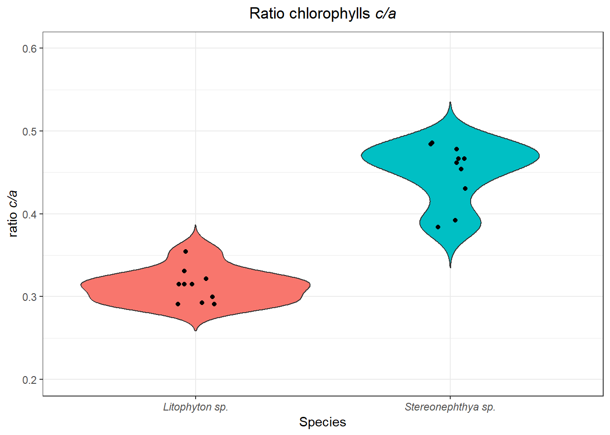
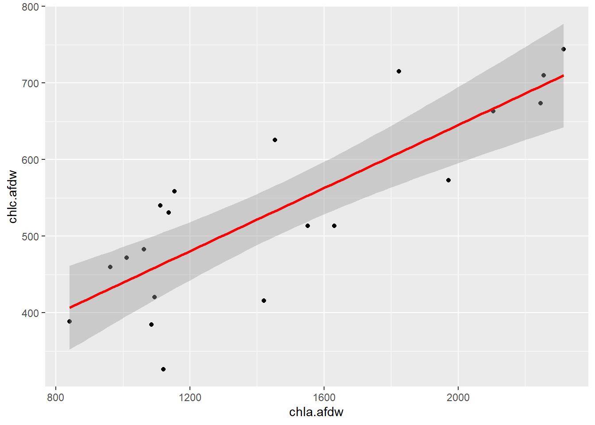
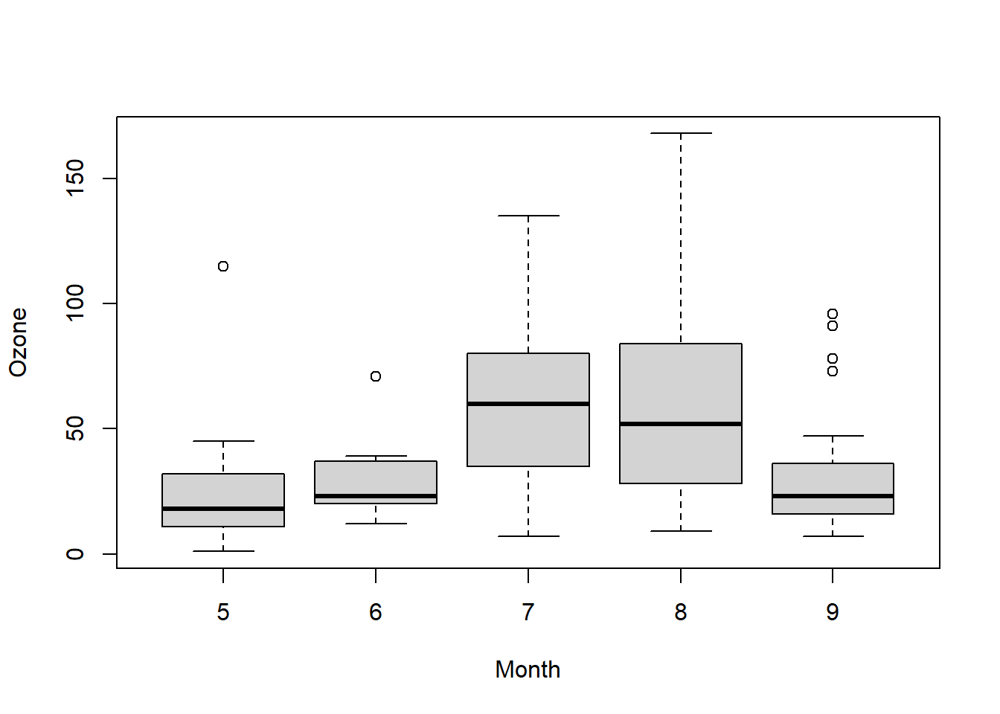
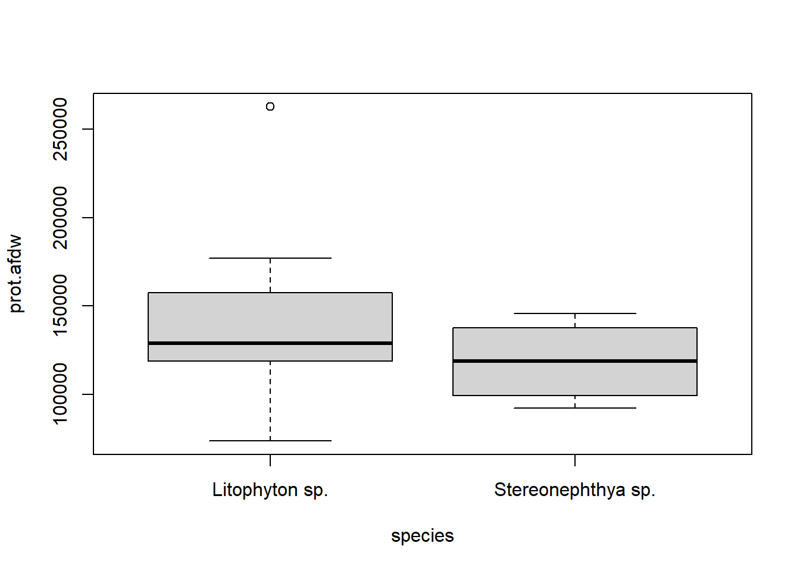
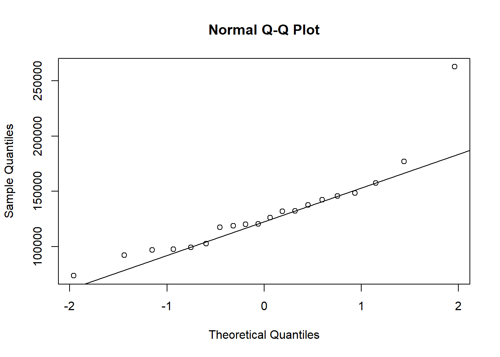
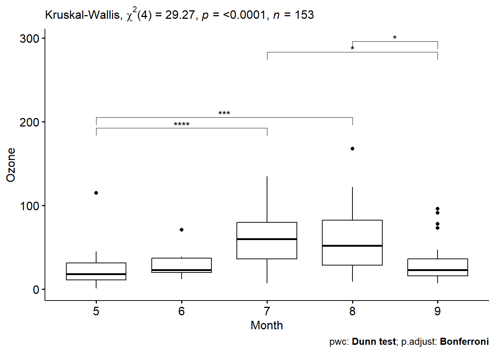

Initation
Statistics, the science of collecting, analyzing, presenting, and interpreting data.
library (psych)
library (tidyverse)
library(gridExtra)
library(car)
library(ggpubr)
library(rstatix)Sample survey methods are used to collect data from observational studies, and experimental design methods are used to collect data from experimental studies. The area of descriptive statistics is concerned primarily with methods of presenting and interpreting data using graphs, tables, and numerical summaries. Whenever statisticians use data from a sample—i.e., a subset of the population—to make statements about a population, they are performing statistical inference. Estimation and hypothesis testing are procedures used to make statistical inferences. Probability plays a key role in statistical inference; it is used to provide measures of the quality and precision of the inferences.
The data set sf_res.csv is extracted from Hsu et
al. (2020) and raw data are available [here] (https://github.com/NTU-FRELab/stranger-things.git). The
data set describe organismal traits in two soft coral species (see
original paper for a full description of variable names, methods and
analyses.
## 'data.frame': 20 obs. of 21 variables:
## $ species : chr "Stereonephthya sp." "Stereonephthya sp." "Stereonephthya sp." "Stereonephthya sp." ...
## $ sample_no : chr "SC190001" "SC190003" "SC190010" "SC190012" ...
## $ depth : int 10 10 10 10 10 10 10 10 10 10 ...
## $ H15N : num NA 5.2 4.94 5.43 5.19 ...
## $ H13C : num -23.2 -22.5 -22.2 -21.6 -21.2 ...
## $ A15N : num 5.58 5.43 4.98 5.53 5.38 ...
## $ A13C : num -19.1 -19.3 -19.2 -18.9 -19.1 ...
## $ H.C.N : num NA 6.73 6.52 6.36 8.19 ...
## $ A.C.N : num 4.18 5.08 4.63 5.53 5.01 ...
## $ perc_om : num 17 19 19.3 21 20 ...
## $ perc_im : num 83 81 80.7 79 80 ...
## $ cell.afdw : num 5.54e+08 6.35e+08 3.94e+08 5.29e+08 4.09e+08 ...
## $ chla.afdw : num 1112 1823 1063 1153 841 ...
## $ chlb.afdw : num -2.32 -24.415 -0.556 -1.525 -8.778 ...
## $ chlc.afdw : num 540 715 483 558 389 ...
## $ ratio : num 0.486 0.392 0.454 0.484 0.462 ...
## $ protZ.afdw: num 86426 82574 60822 53415 74083 ...
## $ protH.afdw: num 55744 55068 38351 49313 46121 ...
## $ prot.afdw : num 142170 137642 99173 102729 120204 ...
## $ lip.cont : num 0.00725 0.01057 0.00636 0.0117 0.00704 ...
## $ lip.afdw : num 0.166 0.152 0.123 0.208 0.164 ...softies$sample_no<-NULL
softies$species<-as.factor(softies$species)
softies$depth<-as.factor(softies$depth)
str(softies)## 'data.frame': 20 obs. of 20 variables:
## $ species : Factor w/ 2 levels "Litophyton sp.",..: 2 2 2 2 2 2 2 2 2 2 ...
## $ depth : Factor w/ 1 level "10": 1 1 1 1 1 1 1 1 1 1 ...
## $ H15N : num NA 5.2 4.94 5.43 5.19 ...
## $ H13C : num -23.2 -22.5 -22.2 -21.6 -21.2 ...
## $ A15N : num 5.58 5.43 4.98 5.53 5.38 ...
## $ A13C : num -19.1 -19.3 -19.2 -18.9 -19.1 ...
## $ H.C.N : num NA 6.73 6.52 6.36 8.19 ...
## $ A.C.N : num 4.18 5.08 4.63 5.53 5.01 ...
## $ perc_om : num 17 19 19.3 21 20 ...
## $ perc_im : num 83 81 80.7 79 80 ...
## $ cell.afdw : num 5.54e+08 6.35e+08 3.94e+08 5.29e+08 4.09e+08 ...
## $ chla.afdw : num 1112 1823 1063 1153 841 ...
## $ chlb.afdw : num -2.32 -24.415 -0.556 -1.525 -8.778 ...
## $ chlc.afdw : num 540 715 483 558 389 ...
## $ ratio : num 0.486 0.392 0.454 0.484 0.462 ...
## $ protZ.afdw: num 86426 82574 60822 53415 74083 ...
## $ protH.afdw: num 55744 55068 38351 49313 46121 ...
## $ prot.afdw : num 142170 137642 99173 102729 120204 ...
## $ lip.cont : num 0.00725 0.01057 0.00636 0.0117 0.00704 ...
## $ lip.afdw : num 0.166 0.152 0.123 0.208 0.164 ...Descriptive
All-at-once
Descriptive statistics are extracting basic information from a data
set. They are usually used to get a quick idea of possible differences,
data distribution, or just summarize them. They are easy to extract on a
single variable, but it may be a bit more complicated to get the same
information on multiple variables at once. If you are familiar with the
pivot table functionality in excel, the same can easily accomplished in
R such as here using the functions as describe and/or
describeBy. Let’s explore our softies data
set
- A quick
summaryof our data set in R (review):
## species depth H15N H13C
## Litophyton sp. :10 10:20 Min. :4.943 Min. :-23.22
## Stereonephthya sp.:10 1st Qu.:5.196 1st Qu.:-21.76
## Median :5.580 Median :-21.41
## Mean :5.599 Mean :-21.22
## 3rd Qu.:5.978 3rd Qu.:-20.75
## Max. :6.410 Max. :-18.50
## NA's :2
## A15N A13C H.C.N A.C.N
## Min. :4.984 Min. :-21.73 Min. :5.735 Min. :4.146
## 1st Qu.:5.391 1st Qu.:-19.43 1st Qu.:6.944 1st Qu.:4.697
## Median :5.537 Median :-19.06 Median :8.117 Median :5.043
## Mean :5.612 Mean :-19.13 Mean :7.755 Mean :5.112
## 3rd Qu.:5.911 3rd Qu.:-18.61 3rd Qu.:8.451 3rd Qu.:5.478
## Max. :6.314 Max. :-17.17 Max. :9.419 Max. :6.279
## NA's :6 NA's :1 NA's :2 NA's :6
## perc_om perc_im cell.afdw chla.afdw
## Min. :16.38 Min. :70.83 Min. :254222222 Min. : 841.3
## 1st Qu.:19.28 1st Qu.:72.88 1st Qu.:310130435 1st Qu.:1092.2
## Median :22.06 Median :77.94 Median :357015385 Median :1286.9
## Mean :22.79 Mean :77.21 Mean :384159286 Mean :1467.5
## 3rd Qu.:27.12 3rd Qu.:80.72 3rd Qu.:415519126 3rd Qu.:1860.4
## Max. :29.17 Max. :83.62 Max. :634716981 Max. :2314.7
##
## chlb.afdw chlc.afdw ratio protZ.afdw
## Min. :-69.55 Min. :325.9 Min. :0.2907 Min. : 25644
## 1st Qu.:-43.83 1st Qu.:449.9 1st Qu.:0.3148 1st Qu.: 43337
## Median :-24.63 Median :522.1 Median :0.3693 Median : 60943
## Mean :-27.72 Mean :535.5 Mean :0.3815 Mean : 65323
## 3rd Qu.: -2.58 3rd Qu.:634.8 3rd Qu.:0.4631 3rd Qu.: 79688
## Max. : 1.50 Max. :744.3 Max. :0.4857 Max. :138392
##
## protH.afdw prot.afdw lip.cont lip.afdw
## Min. : 34709 Min. : 73565 Min. :0.006122 Min. :0.1048
## 1st Qu.: 44694 1st Qu.:101840 1st Qu.:0.007200 1st Qu.:0.1503
## Median : 55977 Median :123240 Median :0.012186 Median :0.2115
## Mean : 64659 Mean :129982 Mean :0.011320 Mean :0.1998
## 3rd Qu.: 84773 3rd Qu.:143063 3rd Qu.:0.014098 3rd Qu.:0.2448
## Max. :124259 Max. :262651 Max. :0.018181 Max. :0.2858
## - A more detailed summary can be obtained using the function
describefrom the packagepsych.
## vars n mean sd median trimmed
## H15N 1 18 5.60 0.48 5.58 5.59
## H13C 2 20 -21.22 1.05 -21.41 -21.28
## A15N 3 14 5.61 0.37 5.54 5.61
## A13C 4 19 -19.13 1.11 -19.06 -19.09
## H.C.N 5 18 7.76 1.06 8.12 7.78
## A.C.N 6 14 5.11 0.67 5.04 5.09
## perc_om 7 20 22.79 4.41 22.06 22.80
## perc_im 8 20 77.21 4.41 77.94 77.20
## cell.afdw 9 20 384159285.57 103344073.34 357015384.65 373386711.11
## chla.afdw 10 20 1467.55 488.05 1286.90 1436.14
## chlb.afdw 11 20 -27.72 24.88 -24.63 -26.35
## chlc.afdw 12 20 535.50 121.65 522.07 533.74
## ratio 13 20 0.38 0.08 0.37 0.38
## protZ.afdw 14 20 65323.05 27465.21 60942.54 62406.94
## protH.afdw 15 20 64659.06 25277.58 55976.61 62084.96
## prot.afdw 16 20 129982.12 39955.65 123240.01 124654.27
## lip.cont 17 20 0.01 0.00 0.01 0.01
## lip.afdw 18 20 0.20 0.06 0.21 0.20
## mad min max range skew kurtosis
## H15N 0.62 4.94 6.41 1.47 0.21 -1.46
## H13C 0.75 -23.22 -18.50 4.72 0.64 0.47
## A15N 0.24 4.98 6.31 1.33 0.30 -0.91
## A13C 0.72 -21.73 -17.17 4.56 -0.54 -0.05
## H.C.N 0.74 5.74 9.42 3.68 -0.52 -1.02
## A.C.N 0.66 4.15 6.28 2.13 0.15 -1.18
## perc_om 5.95 16.38 29.17 12.78 0.07 -1.59
## perc_im 5.95 70.83 83.62 12.78 -0.07 -1.59
## cell.afdw 73299191.06 254222222.20 634716981.10 380494758.90 0.88 -0.26
## chla.afdw 401.12 841.33 2314.67 1473.33 0.52 -1.33
## chlb.afdw 32.82 -69.55 1.50 71.05 -0.40 -1.31
## chlc.afdw 151.93 325.86 744.32 418.46 0.16 -1.19
## ratio 0.11 0.29 0.49 0.19 0.16 -1.80
## protZ.afdw 26797.03 25643.51 138391.85 112748.34 0.85 0.36
## protH.afdw 24826.08 34708.50 124259.03 89550.52 0.67 -0.68
## prot.afdw 31885.40 73565.13 262650.88 189085.74 1.66 3.50
## lip.cont 0.01 0.01 0.02 0.01 0.06 -1.54
## lip.afdw 0.07 0.10 0.29 0.18 -0.13 -1.55
## se
## H15N 0.11
## H13C 0.23
## A15N 0.10
## A13C 0.25
## H.C.N 0.25
## A.C.N 0.18
## perc_om 0.99
## perc_im 0.99
## cell.afdw 23108437.31
## chla.afdw 109.13
## chlb.afdw 5.56
## chlc.afdw 27.20
## ratio 0.02
## protZ.afdw 6141.41
## protH.afdw 5652.24
## prot.afdw 8934.36
## lip.cont 0.00
## lip.afdw 0.01- This is not very informative as we know we have two species.
##
## Descriptive statistics by group
## group: Litophyton sp.
## vars n mean sd median trimmed
## species* 1 10 1.00 0.00 1.00 1.00
## depth* 2 10 1.00 0.00 1.00 1.00
## H15N 3 9 6.01 0.27 6.03 6.01
## H13C 4 10 -20.68 1.07 -20.78 -20.82
## A15N 5 5 5.99 0.28 6.00 5.99
## A13C 6 9 -19.41 1.57 -19.55 -19.41
## H.C.N 7 9 8.21 0.44 8.28 8.21
## A.C.N 8 5 5.52 0.86 5.89 5.52
## perc_om 9 10 26.50 2.55 27.28 26.79
## perc_im 10 10 73.50 2.55 72.72 73.21
## cell.afdw 11 10 343301520.30 73230471.56 318461956.50 331401572.56
## chla.afdw 12 10 1770.01 470.26 1800.84 1787.53
## chlb.afdw 13 10 -44.08 23.38 -45.99 -46.07
## chlc.afdw 14 10 551.68 145.35 543.19 555.83
## ratio 15 10 0.31 0.02 0.31 0.31
## protZ.afdw 16 10 63732.82 36489.94 53649.16 59161.60
## protH.afdw 17 10 77639.99 24143.29 83629.69 76503.55
## prot.afdw 18 10 141372.80 51723.52 128888.32 134689.00
## lip.cont 19 10 0.01 0.00 0.01 0.01
## lip.afdw 20 10 0.25 0.02 0.25 0.25
## mad min max range skew kurtosis
## species* 0.00 1.00 1.00 0.00 NaN NaN
## depth* 0.00 1.00 1.00 0.00 NaN NaN
## H15N 0.37 5.66 6.41 0.75 0.09 -1.80
## H13C 1.26 -21.81 -18.50 3.31 0.66 -0.83
## A15N 0.11 5.55 6.31 0.77 -0.47 -1.35
## A13C 2.13 -21.73 -17.17 4.56 0.05 -1.62
## H.C.N 0.44 7.58 8.91 1.33 -0.04 -1.47
## A.C.N 0.58 4.15 6.28 2.13 -0.64 -1.50
## perc_om 1.81 21.52 29.17 7.64 -0.81 -0.90
## perc_im 1.81 70.83 78.48 7.64 0.81 -0.90
## cell.afdw 48081858.49 265739130.40 516063492.10 250324361.70 1.16 0.35
## chla.afdw 612.10 1085.20 2314.67 1229.47 -0.21 -1.72
## chlb.afdw 30.03 -69.55 -2.67 66.89 0.40 -1.44
## chlc.afdw 191.13 325.86 744.32 418.46 -0.15 -1.63
## ratio 0.02 0.29 0.35 0.06 0.60 -0.71
## protZ.afdw 27700.08 25643.51 138391.85 112748.34 0.81 -0.77
## protH.afdw 17891.98 40112.47 124259.03 84146.56 0.17 -0.76
## prot.afdw 35719.58 73565.13 262650.88 189085.74 1.02 0.40
## lip.cont 0.00 0.01 0.02 0.01 0.34 -1.52
## lip.afdw 0.02 0.22 0.29 0.07 0.12 -1.02
## se
## species* 0.00
## depth* 0.00
## H15N 0.09
## H13C 0.34
## A15N 0.12
## A13C 0.52
## H.C.N 0.15
## A.C.N 0.38
## perc_om 0.81
## perc_im 0.81
## cell.afdw 23157508.43
## chla.afdw 148.71
## chlb.afdw 7.39
## chlc.afdw 45.96
## ratio 0.01
## protZ.afdw 11539.13
## protH.afdw 7634.78
## prot.afdw 16356.41
## lip.cont 0.00
## lip.afdw 0.01
## ------------------------------------------------------------
## group: Stereonephthya sp.
## vars n mean sd median trimmed
## species* 1 10 2.00 0.00 2.00 2.00
## depth* 2 10 1.00 0.00 1.00 1.00
## H15N 3 9 5.19 0.19 5.19 5.19
## H13C 4 10 -21.75 0.74 -21.67 -21.69
## A15N 5 9 5.40 0.21 5.43 5.40
## A13C 6 10 -18.88 0.32 -18.97 -18.90
## H.C.N 7 9 7.30 1.32 6.73 7.30
## A.C.N 8 9 4.88 0.44 4.98 4.88
## perc_om 9 10 19.08 1.99 19.28 18.97
## perc_im 10 10 80.92 1.99 80.72 81.03
## cell.afdw 11 10 425017050.84 116078754.42 401269841.30 420153913.14
## chla.afdw 12 10 1165.08 280.02 1103.28 1123.26
## chlb.afdw 13 10 -11.36 12.87 -5.55 -10.72
## chlc.afdw 14 10 519.32 97.63 506.77 511.17
## ratio 15 10 0.45 0.04 0.46 0.45
## protZ.afdw 16 10 66913.29 15979.83 60942.54 66841.24
## protH.afdw 17 10 51678.14 19787.75 47717.34 47363.60
## prot.afdw 18 10 118591.43 20165.34 118738.22 118523.38
## lip.cont 19 10 0.01 0.00 0.01 0.01
## lip.afdw 20 10 0.15 0.03 0.15 0.15
## mad min max range skew kurtosis
## species* 0.00 2.00 2.00 0.00 NaN NaN
## depth* 0.00 1.00 1.00 0.00 NaN NaN
## H15N 0.22 4.94 5.50 0.56 0.36 -1.45
## H13C 0.78 -23.22 -20.73 2.49 -0.50 -0.84
## A15N 0.14 4.98 5.64 0.66 -0.76 -0.72
## A13C 0.33 -19.30 -18.26 1.04 0.46 -1.11
## H.C.N 1.47 5.74 9.42 3.68 0.27 -1.70
## A.C.N 0.51 4.18 5.53 1.35 -0.22 -1.33
## perc_om 1.84 16.38 22.59 6.21 0.08 -1.20
## perc_im 1.84 77.41 83.62 6.21 -0.08 -1.20
## cell.afdw 97566037.45 254222222.20 634716981.10 380494758.90 0.37 -1.17
## chla.afdw 105.69 841.33 1823.45 982.12 1.19 0.39
## chlb.afdw 10.43 -29.38 1.50 30.88 -0.27 -1.95
## chlc.afdw 73.05 388.52 715.34 326.82 0.56 -0.78
## ratio 0.02 0.38 0.49 0.10 -0.79 -1.06
## protZ.afdw 15320.87 42577.35 91825.65 49248.30 0.21 -1.48
## protH.afdw 12245.20 34708.50 103164.10 68455.60 1.61 1.69
## prot.afdw 28517.35 91985.87 145741.45 53755.57 0.02 -1.82
## lip.cont 0.00 0.01 0.01 0.01 0.90 -0.76
## lip.afdw 0.03 0.10 0.21 0.10 0.31 -0.74
## se
## species* 0.00
## depth* 0.00
## H15N 0.06
## H13C 0.23
## A15N 0.07
## A13C 0.10
## H.C.N 0.44
## A.C.N 0.15
## perc_om 0.63
## perc_im 0.63
## cell.afdw 36707325.19
## chla.afdw 88.55
## chlb.afdw 4.07
## chlc.afdw 30.87
## ratio 0.01
## protZ.afdw 5053.27
## protH.afdw 6257.44
## prot.afdw 6376.84
## lip.cont 0.00
## lip.afdw 0.01##
## Descriptive statistics by group
## group: Litophyton sp.
## vars n mean sd median trimmed
## H15N 1 9 6.01 0.27 6.03 6.01
## H13C 2 10 -20.68 1.07 -20.78 -20.82
## A15N 3 5 5.99 0.28 6.00 5.99
## A13C 4 9 -19.41 1.57 -19.55 -19.41
## H.C.N 5 9 8.21 0.44 8.28 8.21
## A.C.N 6 5 5.52 0.86 5.89 5.52
## perc_om 7 10 26.50 2.55 27.28 26.79
## perc_im 8 10 73.50 2.55 72.72 73.21
## cell.afdw 9 10 343301520.30 73230471.56 318461956.50 331401572.56
## chla.afdw 10 10 1770.01 470.26 1800.84 1787.53
## chlb.afdw 11 10 -44.08 23.38 -45.99 -46.07
## chlc.afdw 12 10 551.68 145.35 543.19 555.83
## ratio 13 10 0.31 0.02 0.31 0.31
## protZ.afdw 14 10 63732.82 36489.94 53649.16 59161.60
## protH.afdw 15 10 77639.99 24143.29 83629.69 76503.55
## prot.afdw 16 10 141372.80 51723.52 128888.32 134689.00
## lip.cont 17 10 0.01 0.00 0.01 0.01
## lip.afdw 18 10 0.25 0.02 0.25 0.25
## mad min max range skew kurtosis
## H15N 0.37 5.66 6.41 0.75 0.09 -1.80
## H13C 1.26 -21.81 -18.50 3.31 0.66 -0.83
## A15N 0.11 5.55 6.31 0.77 -0.47 -1.35
## A13C 2.13 -21.73 -17.17 4.56 0.05 -1.62
## H.C.N 0.44 7.58 8.91 1.33 -0.04 -1.47
## A.C.N 0.58 4.15 6.28 2.13 -0.64 -1.50
## perc_om 1.81 21.52 29.17 7.64 -0.81 -0.90
## perc_im 1.81 70.83 78.48 7.64 0.81 -0.90
## cell.afdw 48081858.49 265739130.40 516063492.10 250324361.70 1.16 0.35
## chla.afdw 612.10 1085.20 2314.67 1229.47 -0.21 -1.72
## chlb.afdw 30.03 -69.55 -2.67 66.89 0.40 -1.44
## chlc.afdw 191.13 325.86 744.32 418.46 -0.15 -1.63
## ratio 0.02 0.29 0.35 0.06 0.60 -0.71
## protZ.afdw 27700.08 25643.51 138391.85 112748.34 0.81 -0.77
## protH.afdw 17891.98 40112.47 124259.03 84146.56 0.17 -0.76
## prot.afdw 35719.58 73565.13 262650.88 189085.74 1.02 0.40
## lip.cont 0.00 0.01 0.02 0.01 0.34 -1.52
## lip.afdw 0.02 0.22 0.29 0.07 0.12 -1.02
## se
## H15N 0.09
## H13C 0.34
## A15N 0.12
## A13C 0.52
## H.C.N 0.15
## A.C.N 0.38
## perc_om 0.81
## perc_im 0.81
## cell.afdw 23157508.43
## chla.afdw 148.71
## chlb.afdw 7.39
## chlc.afdw 45.96
## ratio 0.01
## protZ.afdw 11539.13
## protH.afdw 7634.78
## prot.afdw 16356.41
## lip.cont 0.00
## lip.afdw 0.01
## ------------------------------------------------------------
## group: Stereonephthya sp.
## vars n mean sd median trimmed
## H15N 1 9 5.19 0.19 5.19 5.19
## H13C 2 10 -21.75 0.74 -21.67 -21.69
## A15N 3 9 5.40 0.21 5.43 5.40
## A13C 4 10 -18.88 0.32 -18.97 -18.90
## H.C.N 5 9 7.30 1.32 6.73 7.30
## A.C.N 6 9 4.88 0.44 4.98 4.88
## perc_om 7 10 19.08 1.99 19.28 18.97
## perc_im 8 10 80.92 1.99 80.72 81.03
## cell.afdw 9 10 425017050.84 116078754.42 401269841.30 420153913.14
## chla.afdw 10 10 1165.08 280.02 1103.28 1123.26
## chlb.afdw 11 10 -11.36 12.87 -5.55 -10.72
## chlc.afdw 12 10 519.32 97.63 506.77 511.17
## ratio 13 10 0.45 0.04 0.46 0.45
## protZ.afdw 14 10 66913.29 15979.83 60942.54 66841.24
## protH.afdw 15 10 51678.14 19787.75 47717.34 47363.60
## prot.afdw 16 10 118591.43 20165.34 118738.22 118523.38
## lip.cont 17 10 0.01 0.00 0.01 0.01
## lip.afdw 18 10 0.15 0.03 0.15 0.15
## mad min max range skew kurtosis
## H15N 0.22 4.94 5.50 0.56 0.36 -1.45
## H13C 0.78 -23.22 -20.73 2.49 -0.50 -0.84
## A15N 0.14 4.98 5.64 0.66 -0.76 -0.72
## A13C 0.33 -19.30 -18.26 1.04 0.46 -1.11
## H.C.N 1.47 5.74 9.42 3.68 0.27 -1.70
## A.C.N 0.51 4.18 5.53 1.35 -0.22 -1.33
## perc_om 1.84 16.38 22.59 6.21 0.08 -1.20
## perc_im 1.84 77.41 83.62 6.21 -0.08 -1.20
## cell.afdw 97566037.45 254222222.20 634716981.10 380494758.90 0.37 -1.17
## chla.afdw 105.69 841.33 1823.45 982.12 1.19 0.39
## chlb.afdw 10.43 -29.38 1.50 30.88 -0.27 -1.95
## chlc.afdw 73.05 388.52 715.34 326.82 0.56 -0.78
## ratio 0.02 0.38 0.49 0.10 -0.79 -1.06
## protZ.afdw 15320.87 42577.35 91825.65 49248.30 0.21 -1.48
## protH.afdw 12245.20 34708.50 103164.10 68455.60 1.61 1.69
## prot.afdw 28517.35 91985.87 145741.45 53755.57 0.02 -1.82
## lip.cont 0.00 0.01 0.01 0.01 0.90 -0.76
## lip.afdw 0.03 0.10 0.21 0.10 0.31 -0.74
## se
## H15N 0.06
## H13C 0.23
## A15N 0.07
## A13C 0.10
## H.C.N 0.44
## A.C.N 0.15
## perc_om 0.63
## perc_im 0.63
## cell.afdw 36707325.19
## chla.afdw 88.55
## chlb.afdw 4.07
## chlc.afdw 30.87
## ratio 0.01
## protZ.afdw 5053.27
## protH.afdw 6257.44
## prot.afdw 6376.84
## lip.cont 0.00
## lip.afdw 0.01Counts & proportions
Simple tabulation (count) summary are made
usingtable
##
## Litophyton sp. Stereonephthya sp.
## 0.5 0.5##
## Litophyton sp. Stereonephthya sp.
## 10 10 10##
## Litophyton sp. Stereonephthya sp.
## 10 0.5 0.5# three variables, with nicer formatting after adding a random variables
softies_2<-softies
softies_2$site<-rep(c("A", "B"),10)
ftable(softies_2$depth, softies_2$species, softies_2$site)## A B
##
## 10 Litophyton sp. 5 5
## Stereonephthya sp. 5 5aggregate & apply
We previously applied a diversity of function on a selected vector,
created a filter and applied it on subgroups. In softies,
the ratio represents the amount of chl c / chl a in the samples. It is
informing on the use of light.

## [1] 0.3814767## [1] 0.3125561Descriptive statistics can be calculated on subgroups using
aggregate and apply functions. The difference
between the two is that the 2nd argument in aggregate must
be a list while in tapply it can be a list but this is not
mandatory. As a consequence, the output of aggregate is a
data frame while the one of tapply is an array (basically,
you deal with the list before or after).
## species x
## 1 Litophyton sp. 0.3148325
## 2 Stereonephthya sp. 0.4643134## Litophyton sp. Stereonephthya sp.
## 0.3148325 0.4643134The wide family of apply functions represents common
alternatives to loops. You can read more about the wide
application of these functions in many online resources.
Practice 7.1 Using the data iris explore
how the four traits vary among flower species. (1) Use
boxplot as visual summaries then extract descriptive
statistics by species (describeBy or others) (2) Count
number of observations in each trait and species (it should result in a
table of three species by four traits filled with 50 values) (3)
Calculate the median of each variable by
Species, then calculate the mean by
Species but for the Sepal.Length only.
plot1 <-ggplot(iris, aes(x=Species, y=Sepal.Length)) +
geom_boxplot()
plot2 <-ggplot(iris, aes(x=Species, y=Sepal.Width)) +
geom_boxplot()
plot3 <-ggplot(iris, aes(x=Species, y=Petal.Length)) +
geom_boxplot()
plot4 <-ggplot(iris, aes(x=Species, y=Petal.Width)) +
geom_boxplot()
grid.arrange(plot1, plot2,plot3, plot4, ncol=2)
describeBy (iris, iris$Species)
iris %>% group_by(Species) %>% summarise(across(c(1:4), length))
aggregate(iris[,1:4],by=list(iris$Species), median)
tapply(iris$Sepal.Length , iris$Species, mean)Hypothesis testing
One of the most basic concepts in statistics is hypothesis testing and something called The Null Hypothesis. This class is not about statitics but some basic concepts and understanding are needed. The amazing YouTube Channel StatQuest can help you with that. Josh Starmer is a professor and a musical artist at University of North Carolina at Chapel Hill. You have hours of enjoyment to listen music and learn about stats. Today, let’s got to the fundamental of statistics and explanation about [The Null Hypothesis]((https://www.youtube.com/watch?v=0oc49DyA3hU&list=PLblh5JKOoLUK0FLuzwntyYI10UQFUhsY9&index=8) is a perfect introduction to the topic.
The correct formulation of the hypotheses for what you want to test is crucial: H0 stands for the null hypothesis - no difference is detected (does not mean there is no difference), H1 stands for the alternative hypothesis - the presence of a difference.
Two broad categories of statistics can be distinguished parametric (assuming normal distribution & homoscedasticity - video 3) and non parametric (no assumption of normality).
Note: In these tests, it is important to understand the concept of degrees of freedom: It refers to the maximum number of logically independent values, i.e. values that have the freedom to vary in the data sample. Look here if you are not clear with this term, as it is the foundation you will need later on.
Correlations
Pearson’s correlation (parametric)
- \(r\) pearson coefficient \[ r = \frac{{}\sum_{i=1}^{n} (x_i - \overline{x})(y_i - \overline{y})} {\sqrt{\sum_{i=1}^{n} (x_i - \overline{x})^2(y_i - \overline{y})^2}} \]
- Formula for the \(t\) test fro the correlation coefficient: \[ t = r\sqrt\frac{n-2}{1-r^2} \] ___________with a degrees of freedom equal to \(n-2\)
Math may look scary for some of you but it is actually very easy to
compute (see a demo in step-by step demo in excel here. In R, Pearson
correlation can easily be computed using cor.test.
- Confirming calculation of
studentsin Excel with R
students<-read.table('https://www.dipintothereef.com/uploads/3/7/3/5/37359245/students.txt',header=T, sep="\t", dec='.')
# HO: no significant relationship between height and shoesize
# H1: significant relationship between height and shoesize
x1<-students$height
y1<-students$shoesize
s1<-students[,1:2] # a matrix
# Pearson correlation
# cor(x1,y1)
# cor(s1)
cor.test(x1,y1)##
## Pearson's product-moment correlation
##
## data: x1 and y1
## t = 13.218, df = 8, p-value = 1.023e-06
## alternative hypothesis: true correlation is not equal to 0
## 95 percent confidence interval:
## 0.9061337 0.9949256
## sample estimates:
## cor
## 0.9778637- Using
softiesand examining relationship between amounts of chlorophyll in corals.
# HO: no significant relationship between the amounts of chl a and c
# H1: significant relationship between the amounts of chl a and c
x2<-softies$chla.afdw
y2<-softies$chlc.afdw
s2<-softies[,c(12,14)] # a matrix
# Pearson correlation
# cor(x,y)
# cor(s)
cor.test(x2,y2)##
## Pearson's product-moment correlation
##
## data: x2 and y2
## t = 6.2127, df = 18, p-value = 7.311e-06
## alternative hypothesis: true correlation is not equal to 0
## 95 percent confidence interval:
## 0.6040293 0.9288836
## sample estimates:
## cor
## 0.8258138This relationship is usually represented with it confident interval on a scatter plot.
ggplot(softies, aes(x = chla.afdw, y = chlc.afdw)) +
geom_point() +
stat_smooth(method = "lm", col = "red")## `geom_smooth()` using formula = 'y ~ x'
Spearman’s correlation (non parametric)
It is based on ranking. Basically it tests for a monotonic
relationship. method is added as an argument (default
pearson)
##
## Spearman's rank correlation rho
##
## data: w and z
## S = 0, p-value < 2.2e-16
## alternative hypothesis: true rho is not equal to 0
## sample estimates:
## rho
## 1
Practice 7.2 Rank students by height. Use
fix to edit shoesize in the way that small
individuals will have big feet. Compare \(t\) and \(p\) values from the correlation made
earlier between the two variables. Examine the change in the confidence
interval with a plot.
Chi-square test
Also called a goodness-of-fit test: observed vs theoretical.
- A casino example: all results should be equally probable
#Cast 240 times a die. We counted occurrence of 1,2,3,4,5,6
die<-data.frame(obs=c(55,44,35,45,31,30), row.names=c('Cast1','Cast2','Cast3','Cast4','Cast5','Cast6'))
chisq.test(die)##
## Chi-squared test for given probabilities
##
## data: die
## X-squared = 11.8, df = 5, p-value = 0.03763- Hardy-Weinberg: known frequency
A common biological application of a Chi-square test is the Hardy-Weinberg equilibrium. Genotypes at the Hardy-Weinberg equilibrium (HW-equilibrium) will follow: p2 + 2pq + q2 = 1 at panmixia (random mating, p and q represent allele frequency). In this case, we want to compare our observation to a theoretical distribution. Let’s assume 2 alleles (A and T) with observed genotypes in a population: 750 AA, 50 AT, 200 TT => f(A): 0.775 / f(T)= 0.225. Theoretical distribution should follow: 0.60(p2), 0.5 (2pq), 0.05 (q2) with p2 + 2pq + q2 = 1. Is our population at the HW-equilibrium (H0)?
##
## Chi-squared test for given probabilities
##
## data: obs
## X-squared = 744.64, df = 2, p-value < 2.2e-16- Frequencies
Chi-square test can simply be used to compare the distribution of frequencies in two populations:
F <- matrix(nrow=4,ncol=2,data=c(33,14, 8,18,31,25,14,12))
chisq.test(F) # alternative see `fisher.test`##
## Pearson's Chi-squared test
##
## data: F
## X-squared = 5.4974, df = 3, p-value = 0.1388Student’s t-test
Several version of Student’s t-test exist: one sample compared to a known mean, two samples (with variance equal - Student’s or with unequal variance - Welsh’s), paired samples (compare two dependent (e.g. before-after) samples).
##
## One Sample t-test
##
## data: softies$ratio
## t = -1.0854, df = 19, p-value = 0.2913
## alternative hypothesis: true mean is not equal to 0.4
## 95 percent confidence interval:
## 0.3457567 0.4171966
## sample estimates:
## mean of x
## 0.3814767##
## Two Sample t-test
##
## data: softies$ratio by softies$species
## t = -10.444, df = 18, p-value = 4.556e-09
## alternative hypothesis: true difference in means between group Litophyton sp. and group Stereonephthya sp. is not equal to 0
## 95 percent confidence interval:
## -0.1655684 -0.1101137
## sample estimates:
## mean in group Litophyton sp. mean in group Stereonephthya sp.
## 0.3125561 0.4503972##
## Welch Two Sample t-test
##
## data: softies$chla.afdw by softies$species
## t = 3.4951, df = 14.67, p-value = 0.003353
## alternative hypothesis: true difference in means between group Litophyton sp. and group Stereonephthya sp. is not equal to 0
## 95 percent confidence interval:
## 235.2952 974.5566
## sample estimates:
## mean in group Litophyton sp. mean in group Stereonephthya sp.
## 1770.010 1165.084# Two sample paired t.test
# ?sleep
sleep2 <- reshape(sleep, direction = "wide", idvar = "ID", timevar = "group")
t.test (sleep2$extra.1,sleep2$extra.2,paired=T )##
## Paired t-test
##
## data: sleep2$extra.1 and sleep2$extra.2
## t = -4.0621, df = 9, p-value = 0.002833
## alternative hypothesis: true mean difference is not equal to 0
## 95 percent confidence interval:
## -2.4598858 -0.7001142
## sample estimates:
## mean difference
## -1.58Important, by default t.test uses Welch
correction assuming unequal variances between samples. In the case of a
two samples assuming equal variances, the t statistic is
obtained as following:
 See the step-by step demo in
excel here).
See the step-by step demo in
excel here).
Practice 7.3 Using iris. Does
Sepal.Lenght differ between species setosa and
versicolor? Make a plot, define your hypotheses, test your
hypotheses.
Mann-Whitney
A non-parametric alternative for the comparison of two samples: Mann-Whitney U-test (independent) or Wilcoxon W-test (dependant). Assuming normality assumptions are violated.
## One-sample test.
## Hollander & Wolfe (1973), 29f.
## Hamilton depression scale factor measurements in 9 patients with
## mixed anxiety and depression, taken at the first (x) and second
## (y) visit after initiation of a therapy (administration of a
## tranquilizer).
x <- c(1.83, 0.50, 1.62, 2.48, 1.68, 1.88, 1.55, 3.06, 1.30)
y <- c(0.878, 0.647, 0.598, 2.05, 1.06, 1.29, 1.06, 3.14, 1.29)
depression <- data.frame(first = x, second = y, change = y - x)
wilcox.test(change ~ 1, data = depression) # Formula interface to one-sample##
## Wilcoxon signed rank exact test
##
## data: change
## V = 5, p-value = 0.03906
## alternative hypothesis: true location is not equal to 0##
## Wilcoxon signed rank exact test
##
## data: Pair(first, second)
## V = 40, p-value = 0.03906
## alternative hypothesis: true location shift is not equal to 0
## Warning in wilcox.test.default(x = DATA[[1L]], y = DATA[[2L]], ...): cannot
## compute exact p-value with ties##
## Wilcoxon rank sum test with continuity correction
##
## data: Ozone by Month
## W = 127.5, p-value = 0.0001208
## alternative hypothesis: true location shift is not equal to 0### wilcox_test in package coin for exact, asymptotic and Monte Carlo conditional p-values, including in the presence of ties.
## Softies
boxplot(prot.afdw~species, data=softies)
##
## Shapiro-Wilk normality test
##
## data: softies$prot.afdw
## W = 0.84072, p-value = 0.003741
##
## Wilcoxon rank sum exact test
##
## data: softies$prot.afdw by softies$species
## W = 65, p-value = 0.2799
## alternative hypothesis: true location shift is not equal to 0Two or more samples? kruskal.test also perfoms a rank
sum test. Kruskall-Wallis test (KW-test) is a non-parametric (assumption
free) version of 1-way ANOVA.
##
## Kruskal-Wallis rank sum test
##
## data: Ozone by Month
## Kruskal-Wallis chi-squared = 29.267, df = 4, p-value = 6.901e-06## # A tibble: 1 × 6
## .y. n statistic df p method
## * <chr> <int> <dbl> <int> <dbl> <chr>
## 1 Ozone 153 29.3 4 0.0000069 Kruskal-WallisFrom the output of the Kruskal-Wallis test, we know that there is a significant difference between groups, but we don’t know which pairs of groups are different.
A significant Kruskal-Wallis test is generally followed up by Dunn’s test to identify which groups are different. It’s also possible to use the Wilcoxon’s test to calculate pairwise comparisons between group levels with corrections for multiple testing.
# Pairwise comparisons
oz <- airquality %>%
dunn_test(Ozone ~ Month, p.adjust.method = "bonferroni")
oz## # A tibble: 10 × 9
## .y. group1 group2 n1 n2 statistic p p.adj p.adj.signif
## * <chr> <chr> <chr> <int> <int> <dbl> <dbl> <dbl> <chr>
## 1 Ozone 5 6 26 9 0.925 0.355 1 ns
## 2 Ozone 5 7 26 26 4.42 0.00000989 0.0000989 ****
## 3 Ozone 5 8 26 26 4.13 0.0000358 0.000358 ***
## 4 Ozone 5 9 26 29 1.32 0.186 1 ns
## 5 Ozone 6 7 9 26 2.24 0.0248 0.248 ns
## 6 Ozone 6 8 9 26 2.04 0.0415 0.415 ns
## 7 Ozone 6 9 9 29 -0.00254 0.998 1 ns
## 8 Ozone 7 8 26 26 -0.287 0.774 1 ns
## 9 Ozone 7 9 26 29 -3.22 0.00129 0.0129 *
## 10 Ozone 8 9 26 29 -2.92 0.00347 0.0347 *There was a statistically significant differences between treatment groups as assessed using the Kruskal-Wallis test (p < 0.001). Dunn’s test identified differences between groups 5 & 7, 5 & 8, 7 & 9, 8 & 9. Note the use of an adjusted p-value in case of multiple comparison.
oz <- oz %>% add_xy_position(x = "Month")
ggboxplot(airquality, x = "Month", y = "Ozone") +
stat_pvalue_manual(oz, hide.ns = TRUE) +
labs(
subtitle = get_test_label(res.kruskal, detailed = TRUE),
caption = get_pwc_label(oz)
)## Warning: Removed 37 rows containing non-finite outside the scale range
## (`stat_boxplot()`).
Variances
Variance tests (F-tests) are used to determine if the variances of
two (or more) samples are equal. F-test are generally very sensitive to
the non-normality of the data and can also be assessed visually using
boxplot and qqplot among other visualization. The
homoscedasticity (or homogeneity of
variance) is a very important assumption of parametric
statistics.
## # Test of variance: we test HO: homogeneous, H1:heterogeneous
## fligner.test (softies$ratio ~ softies$species)
## fligner.test (softies$chla.afdw ~ softies$species)Different tests ov variance exist, each with different sensitivity to
non-normality in its impact on heteroscedasticity. Another example using
the ToothGrowth data set (car package).
## tg<-ToothGrowth
## tg$dose<-factor(tg$dose)
## boxplot(len~dose*supp, data=tg)
## # also work with: boxplot(len ~ interaction (dose,supp), data=tg)
## # or: plot(len ~ interaction (dose,supp), data=tg)
## bartlett.test(len~interaction (supp,dose),data=ToothGrowth) # sensitivity non-normality +++
## leveneTest(len~interaction (supp,dose),data=ToothGrowth) # sensitivity non-normality ++
fligner.test(len~interaction (supp,dose),data=ToothGrowth) # sensitivity non-normality +##
## Fligner-Killeen test of homogeneity of variances
##
## data: len by interaction(supp, dose)
## Fligner-Killeen:med chi-squared = 7.7488, df = 5, p-value = 0.1706More on Analysis of Variance (ANOVA) next week.
Practice 7.4 Create your own
t.test function. (e.g. you will not use the above
t.test function but you will code your own function). The
function created should (at least) be able to compare two independent
samples with equal variances. You may make function a bit more handy
with an argument allowing the comparison of two dependent samples with
equal variances. A Welch’s t-test could be an additional option
(advanced). You will need to check at ?pt (or similar
function) in order to extract the p-value. You can “dissect” the code
source of the current t.test function using
getAnywhere("t.test.default"). Please use your customized
function to test the effect of treatment on length
at various days in the rairuoho dataset as well as
a between days in a selected treatment. Build hypotheses, test
them and interpret results.